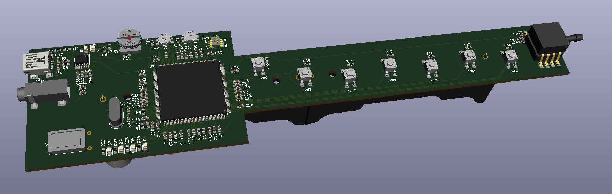
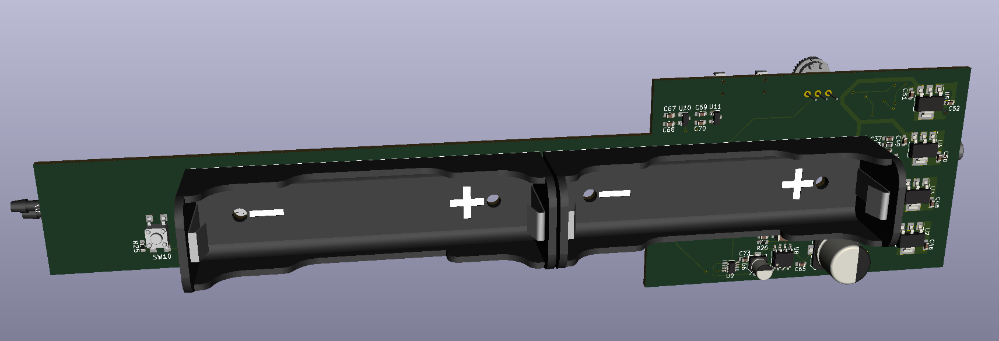

3D model of top generated in KiCAD

3D model of bottom generated in KiCAD

Bare PCB

Assembled Top
Top image of voydophone assembled. Shows TI Delfino dual core MCU, LEDs, buttons, speakers, volume knob, and serial to USB ( for future features!). Had to solder on the programming cable, the connector was giving me grief.

Assembled Bottom
Bottom image of voydophone assembled. Shows battery holders, audio amplification circuit, and voltage regulators.